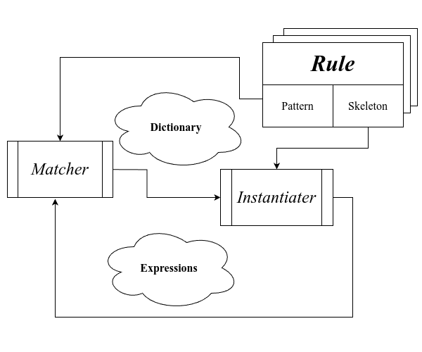

SICP 笔记 - 0x04
archive time: 2025-03-16
说好的周更还是变成了月更，而且还不稳定，嘛，更新了就好
Lecture 4A
在上一节的 符号微分， 我们实现了一个利用模式匹配来完成的基本的微分工具， 那么现在让我们再来仔细看看这些模式有什么规律
模式
通常的模式由两部分构成，一部分用于和要匹配的内容比较，另一部分则用于替换匹配内容
通过这种 “比较替换” 循环，我们可以将内容变换成我们想要的形式
匹配
按照上一节的实现方式，我们如果想要给我们的工具添加一种新的匹配规则，例如让这个工具支持三角函数， 那么我们就不得不修改所有模式的定义以及匹配的分支，这违反了所谓的开闭原则1
那么我们要怎样做才能让我们的工具拥有拓展性呢？
一个比较好的方法就是类似 有理数系统， 我们定义一些共有的开放接口，然后对于每一种模式，我们都实现对应的接口即可
在这里，我们可以使用一个 simplifier，这个过程接受一个模式列表，
然后可以根据这个列表来进行一系列的化简，也就是匹配过程
(define dsimp
(simplifier deriv-rules))
其中这个 deriv-rules 就包含了我们之前定义的求导规则，
得到的这个 dsimp 就可以完成我们之前的求导工具的所有工作，
Rust 具体实现
对于求导我们实现如下：
#[derive(Clone, Debug)]
enum ExpressionElement {
Constant(f64),
Variable(u8),
Neg(Box<ExpressionElement>),
Add(Box<ExpressionElement>, Box<ExpressionElement>),
Sub(Box<ExpressionElement>, Box<ExpressionElement>),
Mul(Box<ExpressionElement>, Box<ExpressionElement>),
Div(Box<ExpressionElement>, Box<ExpressionElement>),
Pow(Box<ExpressionElement>, f64),
}
impl ExpressionElement {
pub fn make_neg(e: ExpressionElement) -> ExpressionElement {
ExpressionElement::Neg(Box::new(e))
}
pub fn make_add(e1: ExpressionElement, e2: ExpressionElement) -> ExpressionElement {
ExpressionElement::Add(Box::new(e1), Box::new(e2))
}
pub fn make_sub(e1: ExpressionElement, e2: ExpressionElement) -> ExpressionElement {
ExpressionElement::Sub(Box::new(e1), Box::new(e2))
}
pub fn make_mul(e1: ExpressionElement, e2: ExpressionElement) -> ExpressionElement {
ExpressionElement::Mul(Box::new(e1), Box::new(e2))
}
pub fn make_div(e1: ExpressionElement, e2: ExpressionElement) -> ExpressionElement {
ExpressionElement::Div(Box::new(e1), Box::new(e2))
}
pub fn make_pow(e: ExpressionElement, p: f64) -> ExpressionElement {
ExpressionElement::Pow(Box::new(e), p)
}
}
impl std::fmt::Display for ExpressionElement {
fn fmt(&self, f: &mut std::fmt::Formatter<'_>) -> std::fmt::Result {
match self {
ExpressionElement::Constant(p) => write!(f, "{}", p),
ExpressionElement::Variable(idx) => write!(f, "x{}", idx),
ExpressionElement::Neg(e) => write!(f, "-({})", e),
ExpressionElement::Add(e1, e2) => write!(f, "({}) + ({})", e1, e2),
ExpressionElement::Sub(e1, e2) => write!(f, "({}) - ({})", e1, e2),
ExpressionElement::Mul(e1, e2) => write!(f, "({}) * ({})", e1, e2),
ExpressionElement::Div(e1, e2) => write!(f, "({}) / ({})", e1, e2),
ExpressionElement::Pow(e, p) => write!(f, "({})^{}", e, p),
}
}
}
trait Simplifier<P> {
fn simplify(e: ExpressionElement) -> ExpressionElement;
}
struct DiffRules<const ID: u8>;
impl<const ID: u8> Simplifier<DiffRules<ID>> for ExpressionElement {
fn simplify(e: ExpressionElement) -> ExpressionElement {
let simpliler = <ExpressionElement as Simplifier<DiffRules<ID>>>::simplify;
match e {
ExpressionElement::Constant(_) => ExpressionElement::Constant(0.0f64),
ExpressionElement::Variable(p) => {
if p == ID {
ExpressionElement::Constant(1.0f64)
} else {
ExpressionElement::Constant(0.0f64)
}
}
ExpressionElement::Neg(e) => ExpressionElement::make_neg(simpliler(*e)),
ExpressionElement::Add(e1, e2) => {
ExpressionElement::make_add(simpliler(*e1), simpliler(*e2))
}
ExpressionElement::Sub(e1, e2) => {
ExpressionElement::make_sub(simpliler(*e1), simpliler(*e2))
}
ExpressionElement::Mul(e1, e2) => ExpressionElement::make_add(
ExpressionElement::make_mul(simpliler(*e1.clone()), *e2.clone()),
ExpressionElement::make_mul(*e1, simpliler(*e2)),
),
ExpressionElement::Div(e1, e2) => ExpressionElement::make_div(
ExpressionElement::make_sub(
ExpressionElement::make_mul(simpliler(*e1.clone()), *e2.clone()),
ExpressionElement::make_mul(*e1, simpliler(*e2.clone())),
),
ExpressionElement::make_pow(*e2, 2.0f64),
),
ExpressionElement::Pow(e, p) => ExpressionElement::make_mul(
ExpressionElement::Constant(p),
ExpressionElement::make_mul(
ExpressionElement::make_div(
ExpressionElement::make_pow(*e.clone(), p),
*e.clone(),
),
simpliler(*e),
),
),
}
}
}其中 impl<const ID: u8> Simplifier<DiffRules<ID>> for ExpressionElement 中的实现就可以视作 deriv-rules
例如我们想要对于多项式中的 x2 求导，那么可以使用如下方式获取求导函数 ：
let dfdx2 = <ExpressionElement as Simplifier<DiffRules<2>>>::simplify;例如对于 ，我们对于 求导，那么可以表示为如下形式：
fn main() {
let exp = ExpressionElement::make_add(
ExpressionElement::Variable(1),
ExpressionElement::Variable(2),
);
println!("exp = {}", exp);
// => exp = (x1) + (x2)
let dfdx2 = <ExpressionElement as Simplifier<DiffRules<2>>>::simplify;
let dexpdx2 = dfdx2(exp);
println!("diff = {}", dexpdx2);
// => diff = (0) + (1)
}代数化简
有了上述方法，我们可以很轻易的扩展我们的化简工具，例如增加一个代数化简：
(define asimp
(simplifier algebra-rules))
Rust 具体实现
struct AlgebraRules;
fn is_zero(x: &f64) -> bool {
x.abs() <= core::f64::EPSILON.sqrt()
}
impl Simplifier<AlgebraRules> for ExpressionElement {
fn simplify(e: ExpressionElement) -> ExpressionElement {
let simpliler = <ExpressionElement as Simplifier<AlgebraRules>>::simplify;
match e {
ExpressionElement::Neg(e) => {
if let ExpressionElement::Neg(inner) = *e {
// -(-e) = e
*inner
} else if let ExpressionElement::Constant(p) = *e {
// -(p) = -e
ExpressionElement::Constant(-p)
} else {
// -e = -(e)
ExpressionElement::make_neg(simpliler(*e))
}
}
ExpressionElement::Add(e1, e2) => {
if let ExpressionElement::Constant(p1) = *e1 {
if let ExpressionElement::Constant(p2) = *e2 {
// p1 + p2 = (p1 + p2)
ExpressionElement::Constant(p1 + p2)
} else if is_zero(&p1) {
// 0 + e2 = (e2)
simpliler(*e2)
} else {
// p1 + e2 = p1 + (e2)
ExpressionElement::make_add(*e1, simpliler(*e2))
}
} else if let ExpressionElement::Constant(p2) = *e2 {
if is_zero(&p2) {
// e1 + 0 = (e1)
simpliler(*e1)
} else {
// e1 + p2 = p2 + (e1)
ExpressionElement::make_add(*e2, simpliler(*e1))
}
} else {
// e1 + e2 = (e1) + (e2)
ExpressionElement::make_add(simpliler(*e1), simpliler(*e2))
}
}
ExpressionElement::Sub(e1, e2) => {
if let ExpressionElement::Constant(p1) = *e1 {
if let ExpressionElement::Constant(p2) = *e2 {
// p1 - p2 = (p1 - p2)
ExpressionElement::Constant(p1 - p2)
} else if is_zero(&p1) {
// 0 - e2 = -(e2)
ExpressionElement::make_neg(simpliler(*e2))
} else {
// p1 + e2 = p1 + (e2)
ExpressionElement::make_sub(*e1, simpliler(*e2))
}
} else if let ExpressionElement::Constant(p2) = *e2 {
if is_zero(&p2) {
// e1 - 0 = (e1)
simpliler(*e1)
} else {
// e1 - p2 = (e1) - p2
ExpressionElement::make_sub(simpliler(*e1), *e2)
}
} else if let ExpressionElement::Neg(inner_e2) = *e2 {
// e1 - (-e2) = (e1) + (e2)
ExpressionElement::make_sub(simpliler(*e1), simpliler(*inner_e2))
} else {
// e1 - e2 = (e1) - (e2)
ExpressionElement::make_sub(simpliler(*e1), simpliler(*e2))
}
}
ExpressionElement::Mul(e1, e2) => {
if let ExpressionElement::Constant(p1) = *e1 {
if let ExpressionElement::Constant(p2) = *e2 {
// p1 * p2 = (p1 * p2)
ExpressionElement::Constant(p1 * p2)
} else if is_zero(&p1) {
// 0 * e2 = 0
ExpressionElement::Constant(0.0f64)
} else if is_zero(&(p1 - 1.0f64)) {
// 1 * e2 = (e2)
simpliler(*e2)
} else {
// p1 * e2 = p1 * (e2)
ExpressionElement::make_mul(*e1, simpliler(*e2))
}
} else if let ExpressionElement::Constant(p2) = *e2 {
if is_zero(&p2) {
// e1 * 0 = 0
ExpressionElement::Constant(0.0f64)
} else if is_zero(&(p2 - 1.0f64)) {
// e1 * 1 = (e1)
simpliler(*e1)
} else {
// e1 * p2 = p2 * (e1)
ExpressionElement::make_mul(*e2, simpliler(*e1))
}
} else {
// e1 * e2 = (e1) * (e2)
ExpressionElement::make_mul(simpliler(*e1), simpliler(*e2))
}
}
ExpressionElement::Div(e1, e2) => {
if let ExpressionElement::Constant(p2) = *e2 {
if let ExpressionElement::Constant(p1) = *e1 {
// p1 / p2 = (p1 / p2)
ExpressionElement::Constant(p1 / p2)
} else if is_zero(&(p2 - 1.0f64)) {
// e1 / 1 = (e1)
simpliler(*e1)
} else {
// e1 / p2 = (e1) / p2
ExpressionElement::make_div(simpliler(*e1), *e2)
}
} else {
if let ExpressionElement::Pow(inner_e1, p1) = *e1 {
if let ExpressionElement::Pow(inner_e2, p2) = *e2 {
// (e)^n / (e)^m = (e)^(n - m)
let simp_e1 = simpliler(*inner_e1);
let simp_e2 = simpliler(*inner_e2);
if simp_e1 == simp_e2 {
ExpressionElement::make_pow(simp_e1, p1 - p2)
} else {
// e1^n / e2^m = (e1)^n / (e2)^m
ExpressionElement::make_div(
ExpressionElement::make_pow(simp_e1, p1),
ExpressionElement::make_pow(simp_e2, p2),
)
}
} else {
// e1^n / e2 = (e1)^n / (e2)
ExpressionElement::make_div(
ExpressionElement::make_pow(simpliler(*inner_e1), p1),
simpliler(*e2),
)
}
} else {
// e1 / e2 = (e1) / (e2)
ExpressionElement::make_div(simpliler(*e1), simpliler(*e2))
}
}
}
_ => e,
}
}
}这里只是一些常见的化简策略，可以进一步化简
例如对于 ，我们可以得到：
fn main() {
let exp = ExpressionElement::make_add(
ExpressionElement::Variable(1),
ExpressionElement::Variable(2),
);
println!("exp = {}", exp);
// => exp = (x1) + (x2)
let dfdx2 = <ExpressionElement as Simplifier<DiffRules<2>>>::simplify;
let dexpdx2 = dfdx2(exp);
// algebra simplify
let asimp = <ExpressionElement as Simplifier<AlgebraRules>>::simplify;
println!("diff = {}", asimp(dexpdx2));
// => diff = 1
}实现细节
这里，我们可以将每一个匹配模式认为是字典中的一个条目， 而化简的过程就是电脑查阅我们而的模式组成的字典的过程， 匹配到某种模式即查阅到某个单词，替换成对应模板则可以类比于将单词替换为释义， 即：

匹配器
一个模式匹配器，或者说 Matcher，其作用是将字典，表达式 以及模式作为输入， 然后将表达式输出为新的字典的过程，而这个输出的字典就是表达式中匹配到的部分
其中难点在于，匹配器需要同时处理表达式和模式两个部分， 在表达式中寻找符合模式的部分然后添加到字典中
(define (match pat exp dict)
(cond ((eq? dict 'failed) 'failed)
;; other check branch
(else
(match (cdr pat)
(cdr exp)
(match (car pat)
(car exp)
dict)))))
除了特殊情况，最一般的匹配中，会匹配 pat 的头部与 exp 的头部，
如果一致，那么就会产生新的字典作为新的匹配输入，
否则就会返回 'failed，表示匹配失败
在遍历和匹配的过程中，如果某个模式在字典中与遍历到的值不一致，就会匹配失败， 例如：
pattern => (+ (* (? x) (? y)) (? y))
expression => (+ (* 3 'X) 'X)
这个例子中，，，没有例外，所以匹配成功，但是如果稍作修改：
pattern => (+ (* (? x) (? y)) (? y))
expression => (+ (* 3 'X) 4)
在这里， 且 ，矛盾，所以匹配失败
用 Rust 可以使用类似的栈模式来类比写出匹配器，这里就不再演示
实例化器
实例化器使用匹配器得到的字典以及规则中的 “骨架” 作为输入，得到新的表达式：
(define (instantiater skeleton dict)
(define (loop s)
(cond ((atom? s) s)
((skeleton-evaluation? s)
(evaluate (eval-exp s) dict))
(else (cons (loop (car s))
(loop (cdr s))))))
(loop skeleton))
这个过程就是一个不断查表，然后替换原表达式结构的过程
这部分同样没有 Rust 演示代码，因为 Rust 不需要这样实现
简化器
简化器就是真正将我们的规则应用到表达式的过程
(define (simplifier the-rules)
(define (simplify-exp exp)
(try-rules (if (compound? exp)
(simplify-parts exp)
exp)))
(define (simplify-parts exp)
(if (null? exp)
'()
(cons (simplify-exp (car exp))
(simplify-parts (cdr exp)))))
(define (try-rules exp)
(define (scan rules)
(if (null? rules)
exp
(let ((dict
(match (pattern (car rules))
exp
(empty-dictionary))))
(if (eq? dict 'failed)
(scan (cdr rules))
(simplify-exp
(instantiater
(skeleton (car rules))
dict))))))
(scan the-rules))
simplify-exp)
可以看到这个 simplifier 就是利用 the-rules 然后返回一个闭包过程，即 simplify-exp
其中 simplify-exp 会使用 simplify-parts 来分析表达式中各个子部分，
而在每个子部分中都会 try-rules 来尝试匹配和应用规则
尽管在 LISP 中的的模式匹配细节非常复杂，但是基本架构还是很清晰的， 即扫描模式与表达式生成字典，然后通过 “骨架” 来替换匹配部分从而生成新的表达式
Lecture 4B
这一节主要研究数据抽象，即如何表示和处理各种 “形状” 的数据
复数与有理数
在之前提到复合数据类型的时候，我们实现了一个有理数系统， 当中提到了我们可以通过各种方式实现有理数系统， 只需要保持对外接口一致，用户是基本无感知的，这点非常重要
通常的数据结构的实现包含了 selector，constructor 和 method 三个部分，
其中 selector 包含了我们能够从结构中获取的各种数据，
constructor 包括了我们如何构建一个数据的方法，
而 method 则是我们对于数据的各种操作，例如有理数的加减
通常的复数实现有两种方式，即直角坐标和极坐标， 直角坐标可以很轻松的获取实部和虚部， 而极坐标可以很轻松的获取辐角和模长，但是反过来就比较麻烦了
所以如果想要操作各种数据，其中的关键就是 selector，
要是一个 通用运算符，即对于不同的实现，我们都可以获取到对应的数据
标记数据
通常来说，在 LISP 中，数据是没有类型（标记）的， 但是在某些场合，我们可能需要区分某些数据， 所以我们可以通过给数据加上标签的形式来区分
这个加上 类型/标签 的过程和构建一个复合数据没有区别，即加上一个部分用于表示类型
(define (add-type type data)
(cons type data))
(define (get-type typed-data)
(car typed-data))
(define (get-data typed-data)
(cdr typed-data))
通用运算符
在这个前提下，要区分直角坐标和极坐标实现的复数， 我们只需要在创建数据的时候加上类型，在使用的时候判断即可
(define (make-im-rect real imag)
(add-type 'rect (cons real imag)))
(define (make-im-polar magnitude angle)
(add-type 'polar (cons magnitude angle)))
而对于不同实现的操作， 我们可以通过添加一个判断来构建一个通用运算符，来支持两种实现
(define (real-part z)
(if (eq? (get-type z) 'rect)
(real-part-rect (get-data z))
(real-part-polar (get-data z))))
这也是一种模式匹配，对应到 Rust 中就是使用 enum 和 match
enum Complex {
Rect(f64, f64),
Polar(f64, f64),
}
impl Complex {
pub fn make_rect(real: f64, imag: f64) -> Complex {
Complex::Rect(real, imag)
}
pub fn make_polar(magnitude: f64, angle: f64) -> Complex {
Complex::Polar(magnitude, angle)
}
pub fn real_part(&self) -> f64 {
match self {
Complex::Rect(real, _) => *real,
Complex::Polar(m, a) => m * a.cos(),
}
}
}基于类型的分派
这种设计模式下，整个系统会分成几个部分，而每个部分有自己独特的类型标识， 对于不同类型的数据，我们可以通过类型将数据来分配给合适的部分进行处理
但是这也有不足，即如果想要添加新的类型，我们还需要修改现有的代码，
即扩充 enum 的定义以及每个通用运算符的分支处理，显得不太灵活
数据导向编程
除了使用 match 或者 if 来判断类型，我们可以用另外一种类似但更加高效的方式来处理，
那就是建立一张表格，这个表格中对应的行可以是对应的类型，
列可以是该表格对应的整体类型，例如复数，可以进行的各种操作，
不用我们去手动匹配，我们可以主动去表格中寻找合适的操作来处理数据，
这种方式也被称为 数据导向编程2，而这个表格则在现在的编程语言中称为虚表3
trait Complex {
fn make_rect(real: f64, imag: f64) -> Self;
fn make_polar(magnitude: f64, angle: f64) -> Self;
fn real_part(&self) -> f64;
}
struct ComplexRect(f64, f64);
impl Complex for ComplexRect {
fn make_rect(real: f64, imag: f64) -> Self {
ComplexRect(real, imag)
}
fn make_polar(magnitude: f64, angle: f64) -> Self {
ComplexRect(magnitude * angle.cos(), magnitude * angle.sin())
}
fn real_part(&self) -> f64 {
self.0
}
}
struct ComplexPolar(f64, f64);
impl Complex for ComplexPolar {
fn make_rect(real: f64, imag: f64) -> Self {
ComplexPolar((real.powi(2) + imag.powi(2)).sqrt(), imag.atan2(real))
}
fn make_polar(magnitude: f64, angle: f64) -> Self {
ComplexPolar(magnitude, angle)
}
fn real_part(&self) -> f64 {
self.0 * self.1.cos()
}
}
fn main() {
let c = <ComplexPolar as Complex>::make_rect(2.0, 3.0);
let r = c.real_part();
println!("real part = {}", r);
// => real part = 2
}这些数据自身就包含如何操作自己的信息，即通过查表
数字系统
我们有复数，有理数，以及语言自身的整数和实数计算， 现在可以开始构建一个数字系统
数字之间的通常操作包括加减乘除，为了让各种数字类型兼容，
我们需要像复数那样，添加上类型，然后将对应的操作添加进我们数字系统的表格中，
即 +rat 放入 'rational 和 'add 这个位置，
+complex 放入 'complex 和 'add 这个位置
在 Rust 中，对应
std::ops::Add
通过这个表格，我们就可以统一各种数字类型的操作，不过此时复数的类型就多了一些， 例如对于使用直角坐标系定义的复数加法，我们有如下标记：
('add . ('complex . ('rect . +complex)))
抽象层级越高，其基本操作上的类型就会越多
多项式运算
有了前面的铺垫，现在可以定义多项式的运算， 这里多项式使用 来表示， 分别对应变量名，阶数以及系数
例如 ， 可以表示为
use std::collections::HashMap;
struct Poly(char, HashMap<i32, f64>);
impl Poly {
pub fn poly_add(p1: Poly, p2: Poly) -> Poly {
if p1.0 != p2.0 {
panic!("[poly_add]: var not match")
} else {
let eq = p1.1.iter().chain(p2.1.iter()).fold(
HashMap::with_capacity(p1.1.len().max(p2.1.len())),
|mut acc: HashMap<i32, f64>, e| {
let value = acc.get(e.0).unwrap_or(&0.0f64);
let _ = acc.insert(*e.0, value + e.1);
acc
},
);
Poly(p1.0, eq)
}
}
}
impl std::fmt::Display for Poly {
fn fmt(&self, f: &mut std::fmt::Formatter<'_>) -> std::fmt::Result {
write!(
f,
"{}",
self.1
.iter()
.map(|e| if e.0 == &0 {
format!("{}", e.1)
} else {
format!("{} {}^{}", e.1, self.0, e.0)
})
.collect::<Vec<String>>()
.join(" + ")
)
}
}
impl std::ops::Add for Poly {
type Output = Self;
fn add(self, rhs: Self) -> Self::Output {
Self::poly_add(self, rhs)
}
}
fn main() {
let p1 = Poly('x', HashMap::from([(15, 1.0), (4, 7.0), (0, 8.0)]));
let p2 = Poly(
'x',
HashMap::from([(13, 2.0), (4, -5.0), (2, 2.0), (0, 2.0)]),
);
let p = p1 + p2;
println!("{}", p);
// => 2 x^2 + 2 x^4 + 1 x^15 + 10 + 2 x^13
}在这里，由于多项式被定义为了系数和阶数的数对，所以实际上系数可以是任何数字类型，
只要实现了 std::ops::Add 都可以，甚至多项式本身也可以，这种扩展性就是数据导向编程带给我们的
数据导向的编程，或者说基于接口的编程使得我们可以轻易地兼容整个系统的运行， 这也是为什么接口，或者说 API 的定义越来越重要
在下一节中我们会看到更多有关函数式编程的内容，包括副作用以及状态
开闭原则.Wikipedia [DB/OL].(2024-05-23)[2025-03-16]. https://en.wikipedia.org/wiki/Open-closed_principle
数据导向编程.Wikipedia [DB/OL].(2024-07-29)[2025-03-16]. https://en.wikipedia.org/wiki/Data-driven_programming
虚表.Wikipedia [DB/OL].(2024-04-23)[2025-03-16]. https://en.wikipedia.org/wiki/Virtual_method_table